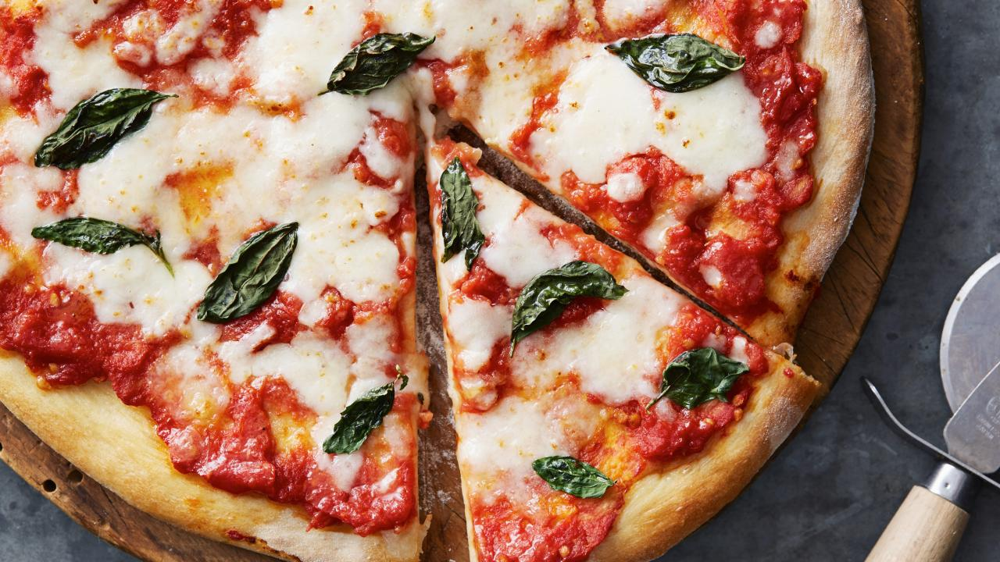

Recipe Details

Ingredients for Pizza Dough:
- 500g strong flour
- 1 tsp salt
- 1 tsp instant yeast
- 325ml lukewarm water
- Olive oil
Ingredients for Topping:
- Tomato sauce
- Fresh mozzarella cheese, sliced
- Fresh basil leaves
- Salt and pepper to taste
Instructions:
- Mix flour, salt, and yeast in a large bowl. Gradually add water and knead until you get a smooth dough. Cover and let it rise for about an hour.
- Preheat oven to the highest temperature (usually around 475-500°F or 240-260°C).
- Divide dough into balls. Roll out into rounds on a floured surface.
- Place dough rounds on baking sheets. Spread tomato sauce on the dough, leaving space at the edges for the crust.
- Add sliced mozzarella and torn basil leaves on top. Season with salt and pepper.
- Drizzle with olive oil and bake in the preheated oven for about 10-15 minutes or until the crust is golden and the cheese is bubbly.